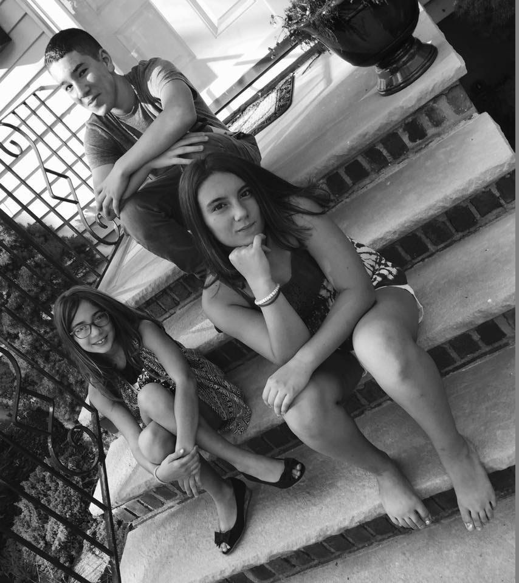
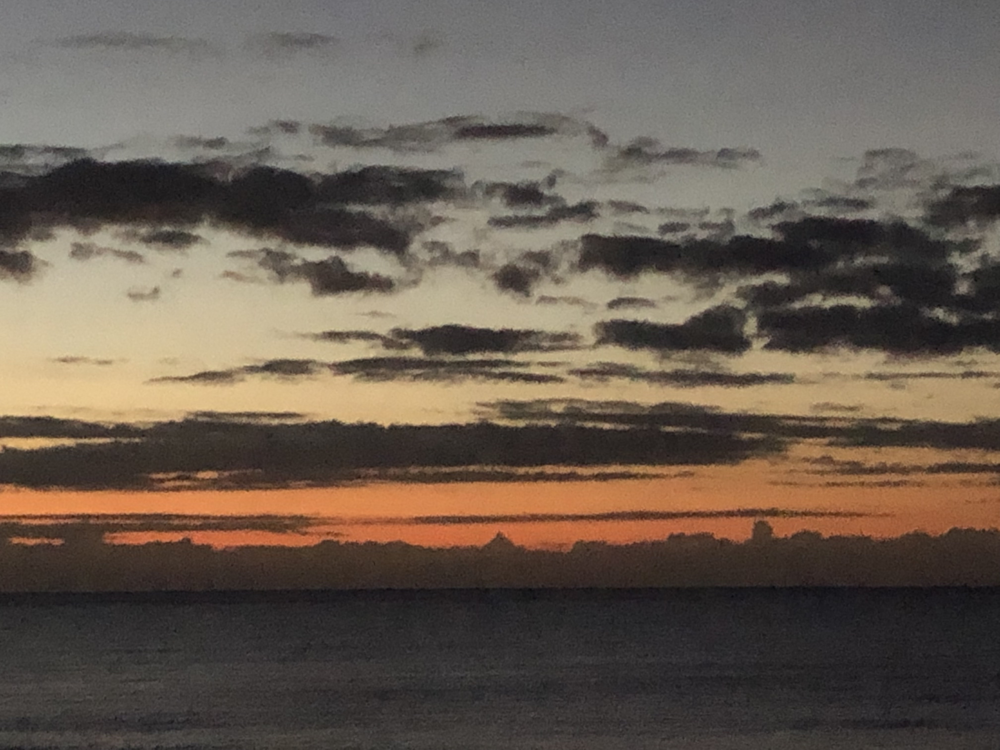
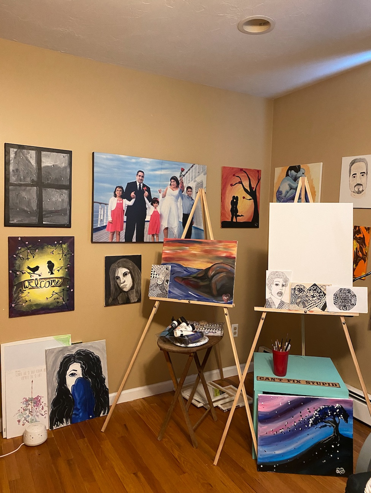

Hover over the squares to learn more.
My wife, Gisele, and I have been been married for over 19 years. We have one adult son and two teenage girls. (Lord, help us!)

We love to travel. We particularly enjoy Caribbean and Central American destinations. When on vacation no matter how late I go to sleep I always get up early enough the next day to watch the sunrise.

My family and I reside in Sturbridge, Massachusetts. I currently work in Back Bay. Yes, that is a pretty crazy commute. I spend about an hour and 40 minutes heading in and about 2 hours going home each day when working in the office. This is a sacrifice I make for liking where I work but also loving where I live.
While most people would think I am crazy for having such a long commute, I make the best of my time on the train; decompressing, reading, or just closing my eyes for a while.
I love learning. Aside from having earned 2 bachelors and 2 masters, I continue to take classes on a variety of topics.
I just completed a web developer bootcamp through Stack Education. I have also taken classes in HVAC and Real Estate. Some topics of interest for future classes include basic auto repair and learning to play guitar.
I spend a fairly large part of my day reading. Whether it is tech blogs, news, educational materials, or books.
For fun I enjoy reading mostly science fiction and fantasy. The top of my list of authors is ofcourse Tolkein. Two of my favorite non Tolkein books are 100 Years of Solitude by Gabriel Garcia Marquez (read it in both English and Spanish) and Hitchiker's Guide to the Galaxy.
I have a fairly eclectic taste in music. I mostly enjoy indie electronica, though I can just as easily switch to jazz, RnB, rap, country, reggaeton, salsa, merengue, rock, alternative, or blues.
Aside from always having music playing somewhere in my background, I took 3 years of piano lessons and 8 of saxophone when I was younger.
While I like to think I can discuss any topic, I love to read and learn about STEM. I follow various science and tech forums. I am fascinated by where technology is headed.
I tend to avoid discussing politics and religion much because they are so polarizing, though I can defend my positions intelligently and amicably when necesary.
I currently work for Abrams Capital as an Executive Support Engineer. I provide white-glove support to the investment and management teams. I also manage their mobile platforms and Ivanti infrastructure.
While I love working for Abrams, I would like to see my career migrate to a management track. This could include personnel, product, or project management. I also have significant experience in cyber security and assurance.
Aside from loving to learn new things, I enjoy painting. Regrettably I don't do it as much as I would like with my limited free time. I have a small art studio set up at home for when I can squeeze in some canvas time.
